The Third Twin
Brassica, Minnesota, today. Mustard Medical Center has a new diagnostician, and it can't tell you why.
In the 1890s, twin doctors founded a clinic here on one rule: every patient gets a second look. Today the clinic is a famous medical center, and it wants a machine to give that second look.
Use → (or Next) to advance and reveal points. F = fullscreen.
Welcome to The Third Twin. It's Brassica, Minnesota, today. Mustard Medical Center has a new diagnostician, and it can't tell you why. In the 1890s, twin doctors founded a clinic here on one rule: every patient gets a second look. Today the clinic is a famous medical center, and it wants a machine to give that second look. Whenever it's your turn, I'll stop and wait for you.
Where You Stand Now
Rate each statement. There are no right answers, and you'll rate them again at the end.
If a computer diagnoses more accurately than doctors, hospitals should use it, even if nobody can explain how it works.
Patients have a right to know when a computer helped diagnose them.
A tool that helps most patients is worth using, even if it works worse for some groups.
When an AI-assisted diagnosis goes wrong, the doctor should take the blame.
I would trust a diagnosis more if a doctor made it than if a computer did.
Here's where you stand now. Rate each of these five statements by how much you agree. There are no right answers, and you'll rate them again at the end. When you've rated all five, press Submit.
Saved. You'll come back to these at the end.
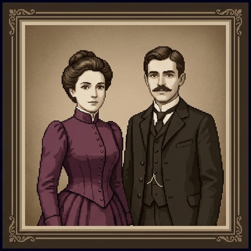
The Mustard Twins
Let's start with how this place began. First, a note: the Center, the town, and everyone in this story are invented.
- In the 1890s, the twin doctors Ida and Otto Mustard opened a clinic in Brassica, a river town in southern Minnesota.
- They had one rule: every patient gets a second look. One twin examined the patient, and the other checked the diagnosis.
- Their clinic grew into Mustard Medical Center, where patients now come from all over the world.
The Center, the town, and everyone in this story are invented.
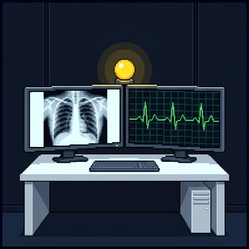
Your Job
The Center has bought an AI system that reads scans, heart tracings, and patient records and suggests a diagnosis. The staff call it the Third Twin.
Now, your job. The Center has bought an AI system that reads scans, heart tracings, and patient records, and suggests a diagnosis. The staff call it the Third Twin.
- You're a new resident, a doctor in training, on the Center's AI review board. Dr. Sam Beaulieu chairs it.
- The board will recommend one of three things: use the Third Twin, use it with conditions, or don't use it.
- First you need to know what tools like it can do. Then come three questions: Can you trust what you can't follow? Accurate for whom? Who's really in charge?
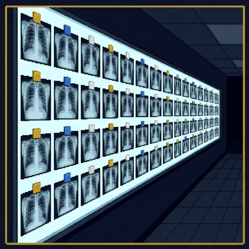
How a Diagnostic AI Learns
Let's see how a diagnostic AI learns.
- Nobody writes rules into it. It is trained on examples: thousands of scans, each labeled by doctors with the right answer.
- It finds whatever patterns in the image go with each label. They may not be the patterns a doctor looks for.
- Then it is tested on cases it has never seen. Its accuracy is the share it gets right.
- It can be wrong in two ways. A miss calls a sick patient healthy. A false alarm calls a healthy patient sick.
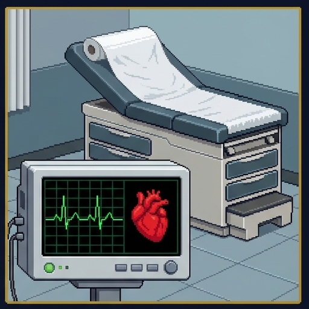
Where It Works Today
Now, where do tools like this work today?
- By mid-2026 the FDA had authorized about 1,600 AI medical devices. About three in four are radiology tools, mostly for medical images.
- In 2018 it authorized the first AI that makes a screening decision with no doctor reading the images: an eye test for damage from diabetes.
- A Swedish trial of over 100,000 women found that AI-supported mammogram screening caught 29% more cancers, with 44% less reading work.
- Close to home: Mayo Clinic researchers built an AI that spots a weak heart pump on an ordinary ECG. In a 2021 trial, new diagnoses rose about 31%, from 1.6% to 2.1% of patients.
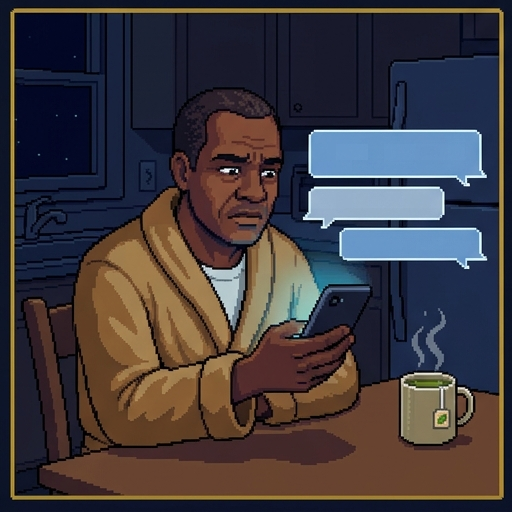
Chatbots That Diagnose
Next, chatbots that diagnose.
- In a 2026 survey, about a third of US adults had used an AI chatbot for health information in the past year.
- In a 2024 trial on written cases, doctors given GPT-4 scored 76% on diagnostic reasoning, and doctors without it 74%, a gap small enough to be chance. GPT-4 alone scored 92%.
- In a 2026 trial in 16 Kenyan clinics, with nearly 10,000 patients, an AI assistant for clinicians made no significant difference to how often treatment failed.
- So a strong tool plus a doctor doesn't automatically make a stronger team.
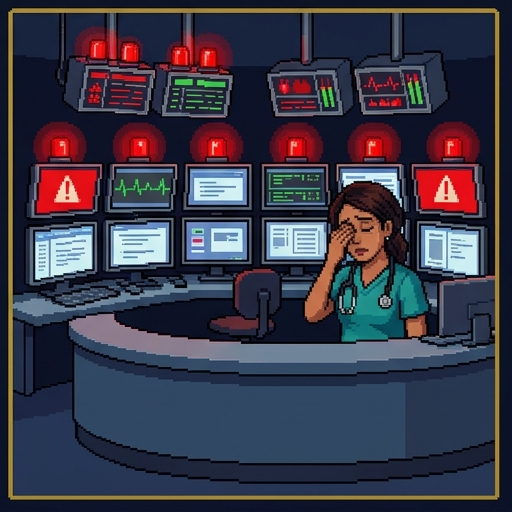
Where It Has Failed
These tools have failed, too.
- A widely used sepsis warning tool was tested at the University of Michigan. It missed two in three patients who had sepsis.
- It also raised alerts on 18% of all patients, most of them false alarms. A 2022 revision does better, but still raises many.
- A 2021 review of 62 studies of COVID-19 scan models found none of potential clinical use, because of flaws and biases.
- A tool can score well where it was built and badly somewhere else. Testing it on patients from somewhere else, such as the hospital that will use it, is called external validation.
Fill In the Gaps
1. A diagnostic AI learns from
examples labeled by doctors.
2. When it calls a sick patient healthy, that mistake is a
miss.
3. In the 2024 trial, doctors given GPT-4 diagnosed
about as well as doctors without it.
4. Testing a tool on patients from a hospital other than the one where it was built is called
external validation.
Time to check what you've learned. Fill in each gap by choosing an option, then press Check.
Right. A diagnostic AI learns from examples that doctors have labeled. And a strong tool plus a doctor isn't automatically a better team.
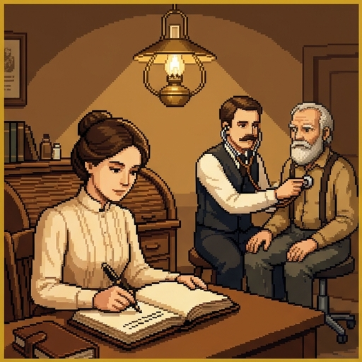
A Diagnosis Without Reasons
Otto sometimes knew a diagnosis before he could say why. Ida made him write his reasons in the casebook, so the other twin could check them.
The Third Twin flags a small spot on June Pham's lung scan as probably cancer and recommends a biopsy. Asked why, it can only highlight the spot.
A system whose reasoning nobody can follow is called a black box. Some are too complex: millions of numbers, and no rule a person could read. Others belong to companies that keep their methods secret.
Back in the 1890s, Otto sometimes knew a diagnosis before he could say why. Ida made him write his reasons in the casebook, so the other twin could check them. Today, the Third Twin flags a small spot on June Pham's lung scan as probably cancer and recommends a biopsy. Asked why, it can only highlight the spot. A system whose reasoning nobody can follow is called a black box. Some are too complex: millions of numbers, and no rule a person could read. Others belong to companies that keep their methods secret.
Judge a medical AI by careful tests of its accuracy, not by whether it explains itself.
Accuracy First
Here's one answer to the black box problem.
- The philosopher Alex John London argues against a blanket demand that medical AI explain itself.
- Doctors prescribed aspirin for nearly a century without knowing how it works, he points out. Why lithium works is still uncertain.
- What justifies a treatment is evidence from careful trials that it helps patients more than the alternatives do.
- So test AI the same way, London says: against doctors, on many kinds of patients, and only for the tasks it passed.
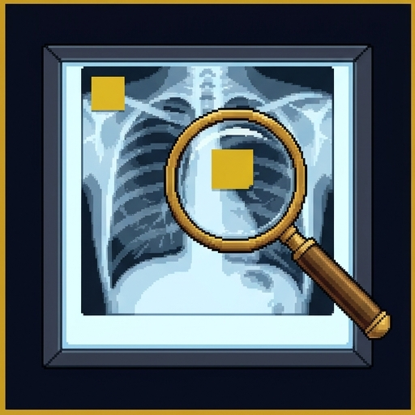
Right for the Wrong Reason
Next, a way a model can be right for the wrong reason.
- A model can score well by using a clue that has nothing to do with the disease. This is called a shortcut. When the clue stops matching the disease, the model goes wrong.
- In 2018, pneumonia models were found to recognize which hospital and ward an X-ray came from. Pneumonia rates differed, so that could skew their verdicts.
- A skin-cancer model called harmless moles cancer far more often when a doctor had drawn ink marks around them: false alarms rose from 16% to 54%. The researchers suspect ink often went with cancer in its training photos.
- In 2021, COVID-19 X-ray models were caught relying on text markers and the patient's position instead of the lungs.
Try It: What Is the Third Twin Looking At?
Now try it yourself. Think of a student who aces multiple-choice tests by always picking the longest answer, without knowing the material. A model can do the same. Here are twelve chest X-rays from the downtown hospital. Find out what the Third Twin is really looking at. Make a guess, then run the three tests, one at a time. When you're ready, press Continue.
What the Test Showed
Here's what the test showed.
- Covering the lungs changed nothing. Covering the corner tag left the Third Twin unable to decide. It was reading the tag.
- The tag marks a portable scan. Downtown, those go to patients too sick to walk to the X-ray room, so the tag went with pneumonia. At the Prairie clinic, every scan is portable.
- London has a reply: this is why a tool must be tested on many kinds of patients, where it will be used. A test at the Prairie clinic shows the failure, even before anyone knows the cause.
- But covering parts of a scan is a way of asking what a model looks at. The team that caught the COVID-19 shortcuts argues that such checks should come before any clinical use.
If doctors must follow an AI they can't explain, patients can't share in the decision.
But Patients Need Reasons
Here's a challenge to that view, from two other philosophers.
- Good medicine today is patient-centered: doctor and patient share what they know, think the options through together, and decide together.
- The philosophers Jens Christian Bjerring and Jacob Busch start from a prediction. AI will become more accurate than doctors, so doctors will be obliged to follow it.
- If it is a black box, a doctor who follows it can't explain her own advice. Then June can't weigh its reasons against her fears and goals.
- So their worry depends on the AI being more accurate. That is what obliges the doctor to follow it.
Which Concern?
London: judge it by careful tests
Shortcut: a clue unrelated to the disease
Bjerring and Busch: patients need reasons
"We prescribed aspirin for decades without knowing how it worked."
"Before we use it, test it on our own patients and compare it with our doctors."
"It scored well downtown, but it was reading the portable scanner's tag."
"The skin model flagged moles because of the ink marks doctors drew around them."
"A patient can't decide whether a biopsy is worth it if nobody can tell her why it's recommended."
"The machine is more accurate, so I follow it. But then I can't explain my own recommendation."
Which concern? Each line is something said at the review board. Sort each one under the idea it expresses: London, shortcut, or Bjerring and Busch. When every line is placed, press Check answers.
Right. London judges a tool by tested accuracy. A shortcut is a clue that has nothing to do with the disease. And Bjerring and Busch worry that patients need reasons.
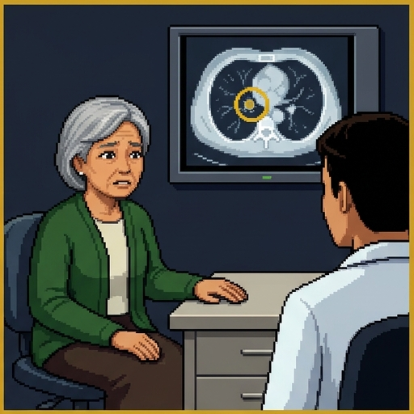
Decision Point: June's Scan
Recommend the biopsy, and tell June the machine's track record.
Recommend it only if a radiologist can find a reason too.
Tell June it's the machine's call, and let her decide.
Don't act on advice the machine can't explain.
This is a decision point. Tested on the Center's own patients, the Third Twin is right more often than the radiologists. It flags June's scan and recommends a biopsy, but it can't say why, and the radiologist sees nothing clear. What should June's doctor do? This one isn't graded. Pick the answer closest to your view, and read its note.
The first answer is London's. The third runs into Bjerring and Busch's worry. Next, a different question: accurate for whom?
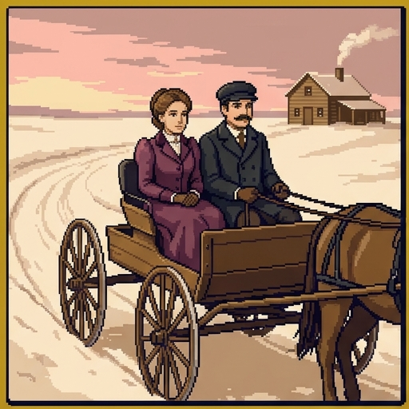
Accurate for Whom?
The twins drove their buggy out to farms all over the county. They knew the farm families as well as the town's.
The Third Twin learned from the downtown hospital's patients. Now the Center wants to use it at its rural Prairie clinic, and for skin checks of every patient.
An accuracy score describes the patients a tool was tested on. It may not describe yours.
Part two: accurate for whom? In the 1890s, the twins drove their buggy out to farms all over the county. They knew the farm families as well as the town's. Today, the Third Twin learned from the downtown hospital's patients. Now the Center wants to use it at its rural Prairie clinic, and for skin checks of every patient. An accuracy score describes the patients a tool was tested on. It may not describe yours.
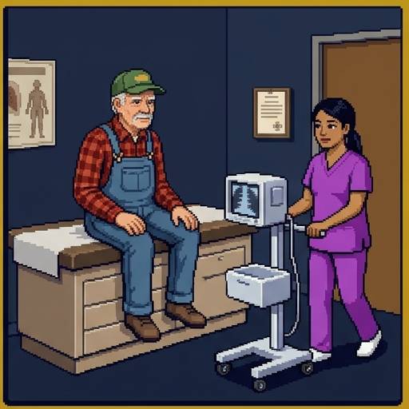
Three Ways a Tool Can Fail a Group
There are three ways a tool can fail a group of patients.
- Unrepresentative data: some patients barely appear in the training examples. In a 2022 test, three skin-cancer models all did worse on dark skin than on light.
- A stand-in label: the tool predicts something easier to measure than what you care about. A widely used program predicted patients' medical costs, not their health needs.
- Less is spent on Black patients with the same needs. So at the cutoff for extra care, Black patients had about 26% more chronic illnesses than white patients.
- A new setting: the patients may be the same, but the equipment, hospital, or way of working differs, like the Prairie clinic's portable scans.
Which Way?
Unrepresentative data
A stand-in label
A new setting
Only 1 in 20 of a skin tool's training photos show dark skin.
At the hospital where it was built, a voice test for depression works poorly for non-native English speakers, who barely appear in its training recordings.
A program picks patients for extra care by predicting their future medical bills.
To find who needs mental health support, a tool predicts who will book therapy, though many people who need it never book.
A tool built on one brand of scanner is moved to a hospital with similar patients that uses another brand.
A sepsis tool trained at a big city hospital goes to a small one with similar patients, whose nurses record vital signs less often.
Which way? Each tool works worse for some patients. Sort each case under the way that explains it, then press Check answers.
Right. Barely appearing in the training data is unrepresentative data. Predicting something easier to measure is a stand-in label. And the same patients with different equipment or ways of working is a new setting.
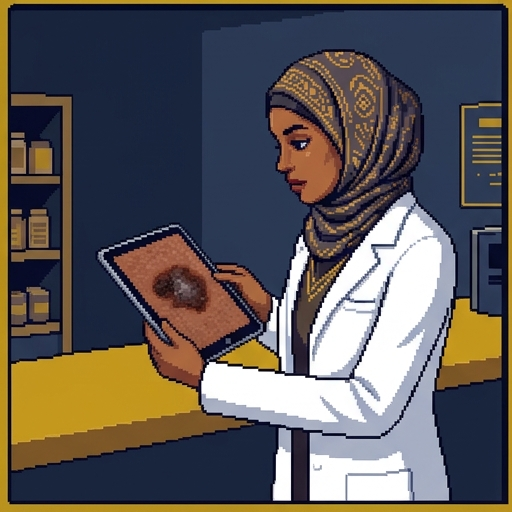
The Skin-Check Dilemma
Hodan Warsame, a pharmacist at the Center, asks the board about the Third Twin's skin-cancer check. Tested on the Center's patients, these are the shares of cancers caught (invented numbers):
| Who checks | Light skin | Dark skin |
|---|
| Doctors alone | 85% | 85% |
|---|
| Third Twin | 95% | 80% |
|---|
Hodan Warsame, a pharmacist at the Center, asks the board about the Third Twin's skin-cancer check. Here are the shares of cancers caught, tested on the Center's patients. These are invented numbers. Doctors alone catch eighty-five percent in light skin and eighty-five percent in dark skin. The Third Twin catches ninety-five percent in light skin, but eighty percent in dark skin. The board has three options.
- A. Wait. Doctors alone for everyone until the Third Twin does as well on dark skin. Equal, but light-skinned patients lose a better check.
- B. Select. The Third Twin for light skin, doctors for dark skin. Nobody does worse than now, but the gap grows.
- C. Everyone. The Third Twin for all. Everyone gets the same tool, and light-skinned patients gain, but dark-skinned patients do worse than now.
Not equality for its own sake, but extra weight for the worse off.
“Benefiting people matters more the worse off these people are.”
Equality or Priority?
To weigh these options, we need a philosopher's idea about equality.
- Some people hold that inequality is bad in itself: it is bad if some people are worse off than others.
- Derek Parfit's levelling down objection: then making the better-off as badly off as everyone else would be better in one way, though it helps no one.
- Choosing A over B does exactly that. Light-skinned patients lose 10 points, and no one gains.
- Parfit's priority view drops equality and gives extra weight to the worse off. That weight isn't unlimited: big enough gains to the better-off can outweigh it.
A Real Version of the Dilemma
In 2024 the ethicists Vandersluis and Savulescu took up a real case: an AI melanoma checker expected to work well on light skin but not on dark skin. They apply Parfit's priority view.
In 2024, the ethicists Vandersluis and Savulescu took up a real case: an AI melanoma checker expected to work well on light skin but not on dark skin. They apply Parfit's priority view.
- Not C. Using the tool for everyone, when it makes dark-skinned patients worse off, would sacrifice them for the sake of others.
- Not A. Waiting until it works for everyone is levelling down. Light-skinned patients would suffer, and no one would gain.
- B, with conditions. Patients left out keep their usual care, are told about the gap, and get extra help, while more data on dark skin are gathered fast.
Decision Point: The Skin Check
A. Wait: doctors alone for everyone until it works on dark skin.
B. Select: the Third Twin for light skin, doctors for dark skin.
C. Everyone: the Third Twin for all patients.
Another decision point. The board must choose a policy for the Third Twin's skin-cancer check. Which do you recommend? This one isn't graded. Pick the answer closest to your view, and read its note.
On the priority view, B beats A, since A helps no one. Vandersluis and Savulescu defend B, with conditions. Many people still worry that sorting patients by skin color is its own kind of unequal treatment.
Equality and Priority: What's True?
The levelling down objection is aimed at the view that inequality is bad in itself.
On the priority view, benefiting people matters more the worse off they are.
Compared with B, A would catch fewer cancers in light-skinned patients and no more in dark-skinned patients.
The priority view says everyone must end up equally well off.
On the priority view, gains to the better-off can never outweigh gains to the worse off.
Vandersluis and Savulescu defend using the tool for everyone, even when it makes dark-skinned patients worse off, since it works for most patients.
Equality and priority: what's true? Check every statement that is true, as this lesson presents it. Then press Check answers.
That's the end of part two. Next, part three: who's really in charge?
Who's Really in Charge?
When the twins gave a second look, each one studied the case alone before they compared notes.
Dr. Kari Lund, a radiologist, reads mammograms with the Third Twin's suggestions already on her screen.
"Keep a doctor in the loop" is the usual safeguard for medical AI. It works only if the doctor still looks for herself.
Part three: who's really in charge? In the 1890s, when the twins gave a second look, each one studied the case alone before they compared notes. Today, Doctor Kari Lund, a radiologist, reads mammograms with the Third Twin's suggestions already on her screen. The usual safeguard for medical AI is to keep a doctor in the loop. It works only if the doctor still looks for herself.
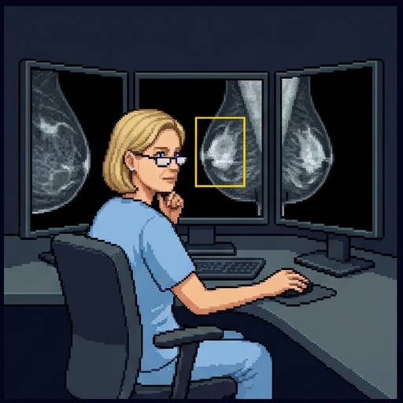
When the Machine Leads
What happens when the machine leads?
- Automation bias: going along with a machine's suggestion over your own judgment.
- In a 2023 study, inexperienced radiologists were right on 80% of mammograms when an AI suggestion was right, but only 20% when it was deliberately wrong.
- Deskilling: losing a skill you no longer use. In one 2025 study, after AI arrived, doctors working without it found precancerous growths in 22% of colonoscopies, down from 28%.
- That study can't prove AI caused the drop. But both problems weaken the safeguard: the doctor checks less, and may get worse at checking.
When an automated system fails, the blame can land on the nearest human.
The Moral Crumple Zone
A car's crumple zone absorbs the force of a crash.
Here's a metaphor. A car's crumple zone absorbs the force of a crash.
- The anthropologist Madeleine Clare Elish calls a person a moral crumple zone when they take the blame for an automated system's failure they had little control over.
- One of her cases: in 2018 a self-driving Uber test car killed a pedestrian. Its emergency braking was switched off, yet attention fell on the safety driver.
- In medicine, the doctor in the loop can become that zone.
- The law scholars Price, Gerke, and Cohen add a squeeze: once AI is standard care, a doctor may be liable for rejecting a correct AI suggestion.
Which Problem?
Automation bias
Deskilling
Moral crumple zone
A resident notices something odd on an ECG but signs off on the AI's "normal" reading anyway.
A doctor changes her correct diagnosis to match the AI's wrong one.
After two years with an AI reader, a radiologist misses more fractures than he used to on days the system is down.
A dermatologist who has used an AI checker for years can no longer judge moles as well without it.
Hospital rules require a doctor to act on an AI's alerts, with no way to check them. A wrong alert harms a patient, and only the doctor is disciplined.
After the AI misses a cancer, a lawsuit names only the doctor who signed off, though the hospital chose the tool and set the rules for using it.
Which problem? Each case shows a problem with keeping a doctor in the loop. Sort each one under automation bias, deskilling, or moral crumple zone, then press Check answers.
Right. Automation bias is going along with the machine against your own judgment. Deskilling is losing a skill the machine now does for you. And a moral crumple zone is taking the blame for a failure you had little power to control.
Decision Point: Whose Fault?
Dr. Lund, who signed the report.
The Center, which chose the tool and set the rules.
The company that made the Third Twin.
All three share it.
Another decision point. The Third Twin marked a mammogram normal, and Doctor Lund signed off on it. A year later, the patient's cancer is found, now harder to treat. Who bears the most responsibility? This one isn't graded. Pick the answer closest to your view, and read its note.
Elish's warning is that the easiest answer, the doctor who signed, may not be the fairest.
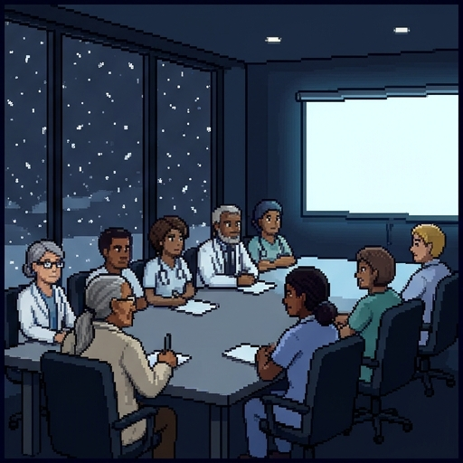
Your Report to the Board
Use it. Tested accuracy is what matters.
Use it, after testing it at every site and for every group of patients.
Use it only after the doctor has made her own call first.
Don't use it. Patients need reasons it can't give.
Your report to the board. Doctor Beaulieu asks for your recommendation. What do you advise the board? This one isn't graded. Pick the answer closest to your view, and read its note.
Each answer leans on a part of this lesson. Next, you'll rate your beliefs again.
Where You Stand Now
These are your ratings from the start. Rate each statement again.
These are your ratings from the start. Rate each statement again, then press Submit.
Saved. Now, a quick summary of the lesson.
Summed Up
Here's the lesson, summed up.
- The state of the art: diagnostic AI learns from labeled examples. It can be very good, and it can fail badly in a new hospital.
- Can you trust what you can't follow? London says test it carefully, where it will be used. Shortcuts show what untested accuracy can hide. Bjerring and Busch say patients need reasons.
- Accurate for whom? Tools fail groups through their data, their labels, or a new setting. Parfit's priority view gives extra weight to losses that fall on the worse off.
- Who's in charge? Automation bias and deskilling weaken the doctor in the loop, who can become a moral crumple zone.
The Mustard twins' rule was a second look. A machine can give one, but someone still has to look.
For Further Reading
If you'd like to go further, here are some good places to start, each with a note on why it's worth your time. Thanks for playing.
- Alex John London, “Artificial Intelligence and Black-Box Medical Decisions: Accuracy versus Explainability,” Hastings Center Report 49, no. 1 (2019): 15–21. The case for judging medical AI by tested accuracy, with a list of what that testing should include.
- Jens Christian Bjerring and Jacob Busch, “Artificial Intelligence and Patient-Centered Decision-Making,” Philosophy & Technology 34, no. 2 (2021): 349–371. Why a black box that doctors are obliged to follow conflicts with shared decisions.
- Robert Vandersluis and Julian Savulescu, “The Selective Deployment of AI in Healthcare: An Ethical Algorithm for Algorithms,” Bioethics 38, no. 5 (2024): 391–400. Parfit's priority view applied to a skin-cancer AI that works better on light skin. Free online.
- Madeleine Clare Elish, “Moral Crumple Zones: Cautionary Tales in Human-Robot Interaction,” Engaging Science, Technology, and Society 5 (2019): 40–60. Who gets blamed when automation fails, from Three Mile Island to a self-driving car. Free online.
- Ziad Obermeyer, Brian Powers, Christine Vogeli, and Sendhil Mullainathan, “Dissecting Racial Bias in an Algorithm Used to Manage the Health of Populations,” Science 366, no. 6464 (2019): 447–453. How predicting costs instead of illness built racial bias into a widely used program.
About this lesson. Brendan Shea, PhD, wrote this lesson with help from AI tools. Claude (Anthropic) helped draft the text and code and check facts, and the illustrations were made with AI image generators. The narrator's voice is synthetic (Google Gemini text-to-speech). The author reviewed everything and is responsible for any errors.